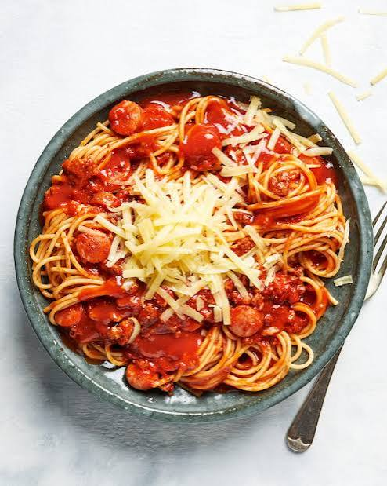
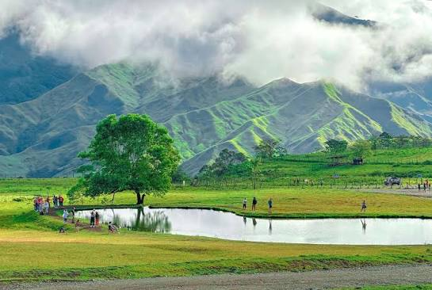

Name:
Geo Jalandoni Brigole
Birthdate:
September 18, 2005
Address:
Camagong, D-4 Calugmaan, Nasipit
Job:
Student
My childhood was full of fun and happy memories. I used to go to the beach with my family and friends whenever we had free time. We enjoyed swimming in the clear water, playing in the sand, and collecting seashells along the shore. One of my favorite memories was riding a **bangka**, a small local boat. I loved feeling the fresh sea breeze and watching the beautiful waves as we traveled across the water. Those moments made me feel excited and carefree. Spending time at the beach taught me to appreciate nature and enjoy simple moments with the people I love. I will always treasure those wonderful childhood memories because they brought me so much happiness.
My teenage life has been the happiest part of my life because it was during this time that I met the person I love. Meeting my loved one brought me so much joy and gave me many wonderful memories. We spent time together, shared our dreams, and supported each other through good and difficult times. This experience taught me the importance of love, trust, and understanding. My teenage years will always be special to me because they were filled with happiness, laughter, and unforgettable moments with someone who means so much to me.
My adulthood has been filled with many responsibilities and pressures. As I grew older, I realized that life is not always easy. I have to work hard, manage my finances, and make important decisions for my future. Sometimes, I feel stressed because of my responsibilities to my family and myself. Even though adulthood can be challenging, it has taught me to become stronger, more independent, and more responsible. I believe that every challenge helps me grow and prepares me for a better future. Despite the pressure, I continue to stay positive and work hard to achieve my goals and build a happy and successful life.
My favorite artist is Vice Ganda because they always make me laugh and inspire me with their positive attitude. I enjoy watching their movies, television shows, and comedy performances because they are entertaining and full of humor. Besides being funny, Vice Ganda is also hardworking, kind, and confident. They have overcome many challenges in life and became successful through determination and talent. I admire Vice Ganda because they encourage people to believe in themselves and never give up on their dreams. That is why Vice Ganda will always be my favorite artist.

My favorite food is spaghetti because it is delicious and full of flavor. I love its sweet tomato sauce, tender noodles, and tasty toppings like ground meat, hotdogs, and cheese. Spaghetti is one of my favorite meals because it is often served during birthdays, family gatherings, and special occasions. Every time I eat spaghetti, it reminds me of happy moments with my family and friends. It always makes me feel happy and satisfied, which is why spaghetti will always be my favorite food.

Bukidnon Communal Ranch is one of my favorite places because of its beautiful scenery and peaceful environment. It is surrounded by green hills, fresh air, and wide open spaces. I enjoy visiting this place because it is relaxing and perfect for taking pictures and spending time with family and friends. One of the best things about Bukidnon Communal Ranch is seeing the cows freely grazing on the hills, which makes the place look like a beautiful countryside. Visiting this ranch makes me appreciate the beauty of nature, and I hope to go there again someday.